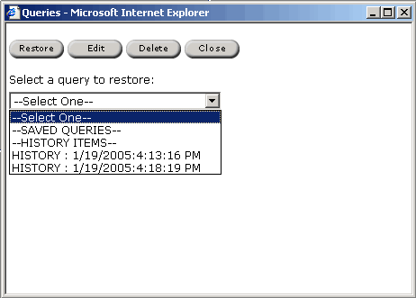

The query input form appears.
The Manage Queries dialog box allows users to restore, edit, and delete queries in the current history and saved queries. Saved queries are user specific.
To start managing your queries, select Manage from the
Queries menu.
The Manage Queries dialog
appears.

For more information about restoring queries, please see Restoring Queries.
To Restore a Query from the Manage Queries dialog:
Edit Query allows the user to enter new identifier information for the query, such as a new name and description, or make the query public. Making a query public makes your query accessible by any other user of the system.
To edit a query:
Only saved queries can be deleted. History queries remain in the query list until the history is cleared. To change when the history is cleared, please see your system administrator.
To delete a query:
|
| Download ChemOffice Enterprise User's Guide (PDF) |
| Download ChemOffice Enterprise User's Guide (CHM) |
| CambridgeSoft
Corporation http://www.cambridgesoft.com Voice: (617) 588-9100 Fax: (617) 588-9360 support@cambridgesoft.com |